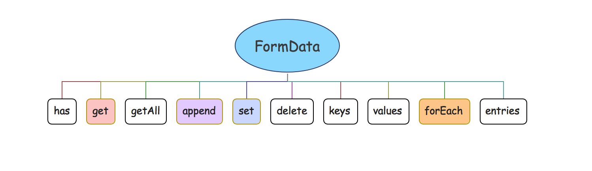

<!DOCTYPE html><html lang="zh-Hans"><head><meta charset="utf-8"><meta name="X-UA-Compatible" content="IE=edge"><title> 网络编程系列 FormData · 花田半亩</title><meta name="description" content="网络编程系列 FormData - 文顶顶"><meta name="viewport" content="width=device-width, initial-scale=1"><link rel="icon" href="/logo.jpeg"><link rel="stylesheet" href="/css/apollo.css"><link rel="search" type="application/opensearchdescription+xml" href="https://weibo.com/u/3800117445/atom.xml" title="花田半亩"><meta name="generator" content="Hexo 5.4.0"><link rel="alternate" href="/atom.xml" title="花田半亩" type="application/atom+xml">
</head><body><div class="wrap"><header><a href="/" class="logo-link"></a><ul class="nav nav-list"><li class="nav-list-item"><a href="/" target="_self" class="nav-list-link">文顶顶</a></li><li class="nav-list-item"><a href="/tags/" target="_self" class="nav-list-link">标签</a></li><li class="nav-list-item"><a href="https://www.cnblogs.com/wendingding/" target="_blank" class="nav-list-link">博客园</a></li><li class="nav-list-item"><a href="https://github.com/flowerField" target="_blank" class="nav-list-link">GITHUB</a></li></ul></header><main class="container"><div class="post"><article class="post-block"><h1 class="post-title">网络编程系列 FormData</h1><div class="post-info">Nov 10, 2018<span class="post-count"></span> ✧ 字数统计:2.7k(字) &nbsp;&nbsp; ♨︎ 阅读时长:12(分钟)</div><div class="post-content"><p class='titleX'>**FormData 简单介绍**</p>[FormData]()是`Ajax 2.0`-[XMLHttpRequest Level 2](https://dvcs.w3.org/hg/xhr/raw-file/tip/Overview.html) 提供的一个接口对象，可以使用该对象来模拟和处理表单并方便的进行**文件上传**操作。

<figure class="highlight javascript"><table><tr><td class="gutter"><pre><span class="line">1</span><br><span class="line">2</span><br><span class="line">3</span><br><span class="line">4</span><br><span class="line">5</span><br><span class="line">6</span><br><span class="line">7</span><br><span class="line">8</span><br><span class="line">9</span><br><span class="line">10</span><br><span class="line">11</span><br><span class="line">12</span><br><span class="line">13</span><br><span class="line">14</span><br><span class="line">15</span><br><span class="line">16</span><br><span class="line">17</span><br><span class="line">18</span><br><span class="line">19</span><br><span class="line">20</span><br><span class="line">21</span><br><span class="line">22</span><br><span class="line">23</span><br></pre></td><td class="code"><pre><span class="line"><span class="built_in">console</span>.dir(FormData)</span><br><span class="line">ƒ FormData()</span><br><span class="line">    <span class="attr">arguments</span>: <span class="literal">null</span></span><br><span class="line">    <span class="attr">caller</span>: <span class="literal">null</span></span><br><span class="line">    <span class="attr">length</span>: <span class="number">0</span></span><br><span class="line">    <span class="attr">name</span>: <span class="string">&quot;FormData&quot;</span></span><br><span class="line">    <span class="attr">prototype</span>: FormData</span><br><span class="line">        <span class="attr">append</span>: ƒ append()</span><br><span class="line">        <span class="attr">delete</span>: ƒ <span class="keyword">delete</span>()</span><br><span class="line">        <span class="attr">entries</span>: ƒ entries()</span><br><span class="line">        <span class="attr">forEach</span>: ƒ forEach()</span><br><span class="line">        <span class="attr">get</span>: ƒ ()</span><br><span class="line">        <span class="attr">getAll</span>: ƒ getAll()</span><br><span class="line">        <span class="attr">has</span>: ƒ has()</span><br><span class="line">        <span class="attr">keys</span>: ƒ keys()</span><br><span class="line">        <span class="attr">set</span>: ƒ ()</span><br><span class="line">        <span class="attr">values</span>: ƒ values()</span><br><span class="line">        <span class="attr">constructor</span>: ƒ FormData()</span><br><span class="line">        <span class="built_in">Symbol</span>(<span class="built_in">Symbol</span>.iterator): ƒ entries()</span><br><span class="line">        <span class="built_in">Symbol</span>(<span class="built_in">Symbol</span>.toStringTag): <span class="string">&quot;FormData&quot;</span></span><br><span class="line">        <span class="attr">__proto__</span>: <span class="built_in">Object</span></span><br><span class="line">    <span class="attr">__proto__</span>: ƒ ()</span><br><span class="line">    [[Scopes]]: Scopes[<span class="number">0</span>]</span><br></pre></td></tr></table></figure>

<p>通过打印并查看formData的结构，可以发现该接口对象本身非常简单。在<a href="">FormData</a>构造函数原型对象上只有<code>append</code>、<code>forEach</code>、<code>keys</code>等少数方法。</p>
<div class='titleX'>**FormData的主要用处**</div>

<blockquote>
<p>❐ 网络请求中模拟和处理表单数据<br>❐ 网络请求中用来异步的上传文件</p>
</blockquote>
<div class='titleX'>**FormData实例的创建**</div>

<p><span style='color:#888'>◆</span> <strong><code>new FormData (form? : HTMLFormElement)</code></strong></p>
<p>在使用FormData构造函数创建实例对象的时候，可以传递一个HTML表单元素，该表单元素允许是任何形式的表单控件，包括文件输入框、复选框等。</p>
<figure class="highlight html"><table><tr><td class="gutter"><pre><span class="line">1</span><br><span class="line">2</span><br><span class="line">3</span><br><span class="line">4</span><br></pre></td><td class="code"><pre><span class="line"><span class="tag">&lt;<span class="name">form</span> <span class="attr">name</span>=<span class="string">&quot;formTest&quot;</span>&gt;</span></span><br><span class="line">    <span class="tag">&lt;<span class="name">input</span> <span class="attr">type</span>=<span class="string">&quot;text&quot;</span> <span class="attr">placeholder</span>=<span class="string">&quot;请输入用户名&quot;</span> <span class="attr">name</span>=<span class="string">&quot;user&quot;</span> <span class="attr">value</span>=<span class="string">&quot;wendingding&quot;</span>&gt;</span></span><br><span class="line">    <span class="tag">&lt;<span class="name">input</span> <span class="attr">type</span>=<span class="string">&quot;password&quot;</span> <span class="attr">placeholder</span>=<span class="string">&quot;请输入密码&quot;</span> <span class="attr">name</span>=<span class="string">&quot;pass&quot;</span> <span class="attr">value</span>=<span class="string">&quot;123456789&quot;</span>&gt;</span></span><br><span class="line"><span class="tag">&lt;/<span class="name">form</span>&gt;</span></span><br></pre></td></tr></table></figure>
<figure class="highlight javascript"><table><tr><td class="gutter"><pre><span class="line">1</span><br><span class="line">2</span><br><span class="line">3</span><br><span class="line">4</span><br><span class="line">5</span><br><span class="line">6</span><br><span class="line">7</span><br><span class="line">8</span><br><span class="line">9</span><br><span class="line">10</span><br><span class="line">11</span><br><span class="line">12</span><br><span class="line">13</span><br><span class="line">14</span><br><span class="line">15</span><br><span class="line">16</span><br><span class="line">17</span><br><span class="line">18</span><br><span class="line">19</span><br><span class="line">20</span><br><span class="line">21</span><br><span class="line">22</span><br><span class="line">23</span><br><span class="line">24</span><br><span class="line">25</span><br></pre></td><td class="code"><pre><span class="line"><span class="comment">//列出创建formData实例对象的几种方式</span></span><br><span class="line"><span class="comment">//001 通过构造函数创建不传递任务参数</span></span><br><span class="line"><span class="keyword">var</span> formData1 = <span class="keyword">new</span> FormData();   <span class="comment">//空的实例对象</span></span><br><span class="line"></span><br><span class="line"><span class="comment">//通过调用对象的方法来设置数据(模拟表单)</span></span><br><span class="line"><span class="comment">//设置数据</span></span><br><span class="line">formData1.set(<span class="string">&quot;name&quot;</span>,<span class="string">&quot;文顶顶&quot;</span>);</span><br><span class="line">formData1.set(<span class="string">&quot;email&quot;</span>,<span class="string">&quot;wendingding_ios@126.com&quot;</span>);</span><br><span class="line">formData1.set(<span class="string">&quot;friends&quot;</span>,<span class="string">&quot;熊大&quot;</span>);</span><br><span class="line"></span><br><span class="line"><span class="comment">//设置数据(追加)</span></span><br><span class="line">formData1.append(<span class="string">&quot;friends&quot;</span>,<span class="string">&quot;光头强&quot;</span>);</span><br><span class="line">formData1.append(<span class="string">&quot;friends&quot;</span>,<span class="string">&quot;萝卜头&quot;</span>);</span><br><span class="line"></span><br><span class="line"><span class="comment">//查看实例数据</span></span><br><span class="line">formData1.forEach(<span class="function"><span class="keyword">function</span>(<span class="params">value,key</span>)</span>&#123;</span><br><span class="line">    <span class="built_in">console</span>.log(key,value);</span><br><span class="line">&#125;)</span><br><span class="line"><span class="built_in">console</span>.log(<span class="string">&quot;----------------------------------&quot;</span>);</span><br><span class="line"></span><br><span class="line"><span class="comment">//002 获取表单标签传递给FormData构造函数</span></span><br><span class="line"><span class="keyword">var</span> formData2 = <span class="keyword">new</span> FormData(<span class="built_in">document</span>.forms.namedItem(<span class="string">&quot;formTest&quot;</span>))</span><br><span class="line">formData2.forEach(<span class="function"><span class="keyword">function</span>(<span class="params">value,key</span>)</span>&#123;</span><br><span class="line">    <span class="built_in">console</span>.log(key,value);</span><br><span class="line">&#125;)</span><br></pre></td></tr></table></figure>
<div class='tip'>**注意** 表单标签必须要设置name属性节点才能获取其数据</div>

<p><strong>说明</strong> 在上面的示例代码中介绍了两种创建(获取)formData实例对象的方式，可以<span style='color:#f33'>先创建一个空的实例对象也可以直接通过页面中的表单标签来进行初始化处理</span>。</p>
<p>当formData数据装填好之后，可以直接通过ajax方法提交到服务器端，下面给出上面代码的执行结果。</p>
<figure class="highlight bash"><table><tr><td class="gutter"><pre><span class="line">1</span><br><span class="line">2</span><br><span class="line">3</span><br><span class="line">4</span><br><span class="line">5</span><br><span class="line">6</span><br><span class="line">7</span><br><span class="line">8</span><br></pre></td><td class="code"><pre><span class="line">name 文顶顶</span><br><span class="line">email wendingding_ios@126.com</span><br><span class="line">friends 熊大</span><br><span class="line">friends 光头强</span><br><span class="line">friends 萝卜头</span><br><span class="line">----------------------------------</span><br><span class="line">user wendingding</span><br><span class="line">pass 123456789</span><br></pre></td></tr></table></figure>

<div class='titleX'>**FormData的主要方法**</div>



<p>如上图所示，FormData构造函数的原型对象上面定义了一堆方法。这些方法使用方式都很简单，接下来我们通过代码的方式简单介绍他们。</p>
<figure class="highlight javascript"><table><tr><td class="gutter"><pre><span class="line">1</span><br><span class="line">2</span><br><span class="line">3</span><br><span class="line">4</span><br><span class="line">5</span><br><span class="line">6</span><br><span class="line">7</span><br><span class="line">8</span><br><span class="line">9</span><br><span class="line">10</span><br><span class="line">11</span><br><span class="line">12</span><br><span class="line">13</span><br><span class="line">14</span><br><span class="line">15</span><br><span class="line">16</span><br><span class="line">17</span><br><span class="line">18</span><br><span class="line">19</span><br><span class="line">20</span><br><span class="line">21</span><br><span class="line">22</span><br><span class="line">23</span><br><span class="line">24</span><br><span class="line">25</span><br><span class="line">26</span><br><span class="line">27</span><br><span class="line">28</span><br><span class="line">29</span><br><span class="line">30</span><br><span class="line">31</span><br><span class="line">32</span><br><span class="line">33</span><br><span class="line">34</span><br><span class="line">35</span><br><span class="line">36</span><br><span class="line">37</span><br><span class="line">38</span><br><span class="line">39</span><br><span class="line">40</span><br><span class="line">41</span><br><span class="line">42</span><br><span class="line">43</span><br><span class="line">44</span><br><span class="line">45</span><br><span class="line">46</span><br><span class="line">47</span><br><span class="line">48</span><br><span class="line">49</span><br><span class="line">50</span><br><span class="line">51</span><br><span class="line">52</span><br><span class="line">53</span><br><span class="line">54</span><br><span class="line">55</span><br><span class="line">56</span><br><span class="line">57</span><br><span class="line">58</span><br><span class="line">59</span><br><span class="line">60</span><br></pre></td><td class="code"><pre><span class="line"><span class="comment">//01 创建空的formData实例对象</span></span><br><span class="line">   <span class="keyword">var</span> data = <span class="keyword">new</span> FormData();</span><br><span class="line"></span><br><span class="line">   <span class="comment">//02 设置数据(添加)</span></span><br><span class="line">   data.set(<span class="string">&quot;age&quot;</span>,<span class="number">18</span>);</span><br><span class="line">   data.set(<span class="string">&quot;name&quot;</span>,<span class="string">&quot;LiuY&quot;</span>);</span><br><span class="line">   data.set(<span class="string">&quot;type&quot;</span>,<span class="string">&quot;法师&quot;</span>);</span><br><span class="line">   data.set(<span class="string">&quot;address&quot;</span>,<span class="string">&quot;泉水中心&quot;</span>);</span><br><span class="line">   <span class="comment">//03 设置数据(修改和删除)</span></span><br><span class="line">   data.set(<span class="string">&quot;name&quot;</span>,<span class="string">&quot;MiTaoer&quot;</span>);</span><br><span class="line">   data.delete(<span class="string">&quot;address&quot;</span>);</span><br><span class="line">   <span class="comment">//04 设置数据(追加)</span></span><br><span class="line">   data.append(<span class="string">&quot;type&quot;</span>,<span class="string">&quot;战士&quot;</span>);</span><br><span class="line">   data.append(<span class="string">&quot;type&quot;</span>,<span class="string">&quot;辅助&quot;</span>);</span><br><span class="line"></span><br><span class="line">   <span class="comment">//05 读取数据(指定key-one)</span></span><br><span class="line">   <span class="built_in">console</span>.log(data.get(<span class="string">&quot;name&quot;</span>));          <span class="comment">//MiTaoer</span></span><br><span class="line">   <span class="built_in">console</span>.log(data.get(<span class="string">&quot;type&quot;</span>));          <span class="comment">//法师</span></span><br><span class="line"></span><br><span class="line">   <span class="comment">//06 读取数据(指定key-All)</span></span><br><span class="line">   <span class="built_in">console</span>.log(data.getAll(<span class="string">&quot;type&quot;</span>));       <span class="comment">//[&quot;法师&quot;, &quot;战士&quot;, &quot;辅助&quot;]</span></span><br><span class="line">   </span><br><span class="line">   <span class="comment">//07 检查是否拥有指定的key</span></span><br><span class="line">   <span class="built_in">console</span>.log(data.has(<span class="string">&quot;age&quot;</span>));           <span class="comment">//true</span></span><br><span class="line">   <span class="built_in">console</span>.log(data.has(<span class="string">&quot;email&quot;</span>));         <span class="comment">//false</span></span><br><span class="line"></span><br><span class="line">   <span class="comment">//08 迭代器的基本使用(keys)</span></span><br><span class="line">   <span class="keyword">var</span> keyIterator = data.keys()      <span class="comment">//获取迭代器对象</span></span><br><span class="line">   <span class="built_in">console</span>.log(keyIterator.next());   <span class="comment">//&#123;done: false, value: &quot;age&quot;&#125;</span></span><br><span class="line">   <span class="built_in">console</span>.log(keyIterator.next());   <span class="comment">//&#123;done: false, value: &quot;name&quot;&#125;</span></span><br><span class="line">   <span class="built_in">console</span>.log(keyIterator.next());   <span class="comment">//&#123;done: false, value: &quot;type&quot;&#125;</span></span><br><span class="line">   <span class="built_in">console</span>.log(keyIterator.next());   <span class="comment">//&#123;done: false, value: &quot;type&quot;&#125;</span></span><br><span class="line">   <span class="built_in">console</span>.log(keyIterator.next());   <span class="comment">//&#123;done: false, value: &quot;type&quot;&#125;</span></span><br><span class="line">   <span class="built_in">console</span>.log(keyIterator.next());   <span class="comment">//&#123;done: true, value: undefined&#125;</span></span><br><span class="line">   </span><br><span class="line">   <span class="built_in">console</span>.log(<span class="string">&quot;___________________&quot;</span>);</span><br><span class="line"></span><br><span class="line">   <span class="comment">//09 迭代器的基本使用(values)</span></span><br><span class="line">   <span class="keyword">var</span> valueIterator = data.values();  <span class="comment">//获取迭代器对象</span></span><br><span class="line">   <span class="built_in">console</span>.log(valueIterator.next());  <span class="comment">//&#123;done: false, value: &quot;18&quot;&#125;</span></span><br><span class="line">   <span class="built_in">console</span>.log(valueIterator.next());  <span class="comment">//&#123;done: false, value: &quot;MiTaoer&quot;&#125;</span></span><br><span class="line">   <span class="built_in">console</span>.log(valueIterator.next());  <span class="comment">//&#123;done: false, value: &quot;法师&quot;&#125;</span></span><br><span class="line">   <span class="built_in">console</span>.log(valueIterator.next());  <span class="comment">//&#123;done: false, value: &quot;战士&quot;&#125;</span></span><br><span class="line">   <span class="built_in">console</span>.log(valueIterator.next());  <span class="comment">//&#123;done: false, value: &quot;辅助&quot;&#125;</span></span><br><span class="line">   <span class="built_in">console</span>.log(valueIterator.next());  <span class="comment">//&#123;done: true, value: undefined&#125;</span></span><br><span class="line"></span><br><span class="line">   <span class="comment">//10 迭代器的基本使用(entries)</span></span><br><span class="line">   <span class="built_in">console</span>.log(data.entries().next());     <span class="comment">//&#123;done: false, value: [&quot;age&quot;, &quot;18&quot;]&#125;</span></span><br><span class="line"></span><br><span class="line">   <span class="comment">//11 formData对象的遍历</span></span><br><span class="line">   data.forEach(<span class="function"><span class="keyword">function</span>(<span class="params">value,key</span>)</span>&#123;</span><br><span class="line">       <span class="comment">//输出结果</span></span><br><span class="line">       <span class="comment">// age 18</span></span><br><span class="line">       <span class="comment">// name MiTaoer</span></span><br><span class="line">       <span class="comment">// type 法师</span></span><br><span class="line">       <span class="comment">// type 战士</span></span><br><span class="line">       <span class="comment">// type 辅助</span></span><br><span class="line">       <span class="built_in">console</span>.log(key,value);</span><br><span class="line">   &#125;)</span><br><span class="line"></span><br></pre></td></tr></table></figure>
<p><strong>代码说明</strong></p>
<p><a href="">formData对象</a>的这些方法其实不用进行过多的赘述，上面的代码和说明简单易懂。总体上来说，它提供了一整套的操作数据的方法囊括了添加(set)、修改、查询和删除等操作，<code>append</code>方法和set方法的不同之处在于它不会覆盖而是以数组push的方式来处理同名的数据。</p>
<p><a href="">formData对象</a>的<code>keys()</code>、<code>values()</code>和<code>entries()</code>方法使用类似，调用后将得到一个<code>Iterator类型</code>的迭代器对象，该对象能够能够调用<code>next()</code>方法来进行迭代操作，打印结果中的<code>done</code>使用布尔类型的值来进行标记，如果迭代结束那么值为<strong>true</strong>。</p>
<p><a href="">formData对象</a>的<code>forEach()</code>接收一个回调函数参数，其中第一个参数为当前遍历数据的<code>value</code>值，第二个参数为<code>key</code>(同数组的forEach方法一致)。如果是Ajax发送GET请求，需要通过<a href="">formData对象</a>的方式来提交表单数据，那么可以借助该方法来拼接查询字符串。</p>
<p class='titleX'>**FormData的典型用法**</p>这里给定如下的表单数据，然后介绍如何使用FormData来处理表单数据发送GET和POST请求。
<figure class="highlight html"><table><tr><td class="gutter"><pre><span class="line">1</span><br><span class="line">2</span><br><span class="line">3</span><br><span class="line">4</span><br><span class="line">5</span><br><span class="line">6</span><br><span class="line">7</span><br><span class="line">8</span><br><span class="line">9</span><br><span class="line">10</span><br><span class="line">11</span><br><span class="line">12</span><br><span class="line">13</span><br><span class="line">14</span><br><span class="line">15</span><br><span class="line">16</span><br><span class="line">17</span><br><span class="line">18</span><br><span class="line">19</span><br><span class="line">20</span><br><span class="line">21</span><br><span class="line">22</span><br><span class="line">23</span><br><span class="line">24</span><br><span class="line">25</span><br><span class="line">26</span><br><span class="line">27</span><br><span class="line">28</span><br><span class="line">29</span><br><span class="line">30</span><br><span class="line">31</span><br><span class="line">32</span><br><span class="line">33</span><br><span class="line">34</span><br><span class="line">35</span><br><span class="line">36</span><br><span class="line">37</span><br><span class="line">38</span><br><span class="line">39</span><br><span class="line">40</span><br></pre></td><td class="code"><pre><span class="line"><span class="tag">&lt;<span class="name">form</span> <span class="attr">name</span>=<span class="string">&quot;formTest&quot;</span>&gt;</span></span><br><span class="line">    <span class="tag">&lt;<span class="name">input</span> <span class="attr">type</span>=<span class="string">&quot;text&quot;</span> <span class="attr">name</span>=<span class="string">&quot;user&quot;</span> <span class="attr">placeholder</span>=<span class="string">&quot;请输入用户名&quot;</span>&gt;</span><span class="tag">&lt;<span class="name">br</span>&gt;</span></span><br><span class="line">    <span class="tag">&lt;<span class="name">input</span> <span class="attr">type</span>=<span class="string">&quot;text&quot;</span> <span class="attr">name</span>=<span class="string">&quot;email&quot;</span> <span class="attr">placeholder</span>=<span class="string">&quot;请输入邮箱&quot;</span>&gt;</span><span class="tag">&lt;<span class="name">br</span>&gt;</span></span><br><span class="line">    <span class="tag">&lt;<span class="name">input</span> <span class="attr">type</span>=<span class="string">&quot;password&quot;</span> <span class="attr">name</span>=<span class="string">&quot;pass&quot;</span> <span class="attr">placeholder</span>=<span class="string">&quot;请输入密码&quot;</span>&gt;</span><span class="tag">&lt;<span class="name">br</span>&gt;</span></span><br><span class="line">    <span class="tag">&lt;<span class="name">input</span> <span class="attr">type</span>=<span class="string">&quot;checkbox&quot;</span> <span class="attr">name</span>=<span class="string">&quot;check&quot;</span>&gt;</span> 是否勾选<span class="tag">&lt;<span class="name">br</span>&gt;</span></span><br><span class="line"><span class="tag">&lt;/<span class="name">form</span>&gt;</span></span><br><span class="line"><span class="tag">&lt;<span class="name">button</span>&gt;</span>提交表单数据<span class="tag">&lt;/<span class="name">button</span>&gt;</span>```</span><br><span class="line"><span class="tag">&lt;<span class="name">div</span> <span class="attr">style</span>=<span class="string">&#x27;background:#195;color:#fff;width:120px;text-align:center&#x27;</span>&gt;</span>**GET请求**<span class="tag">&lt;/<span class="name">div</span>&gt;</span></span><br><span class="line"></span><br><span class="line">```javaScript</span><br><span class="line">    //01 获取页面中的btn标签</span><br><span class="line">    var oBtn = document.getElementsByTagName(&quot;button&quot;)[0];</span><br><span class="line">    </span><br><span class="line">    //02 给按钮标签添加点击事件</span><br><span class="line">    oBtn.onclick = function()&#123;</span><br><span class="line"></span><br><span class="line">        //03 使用Ajax发送GET请求</span><br><span class="line">        var xhr = new XMLHttpRequest();</span><br><span class="line">        xhr.open(&quot;GET&quot;,&quot;http://127.0.0.1:3000?&quot;+getData(),true);</span><br><span class="line">        xhr.send();</span><br><span class="line">        xhr.onreadystatechange = function()&#123;</span><br><span class="line">            if(xhr.status &gt;= 200 &amp;&amp; xhr.status &lt;=300 || xhr.status == 304)</span><br><span class="line">            &#123;</span><br><span class="line">                console.log(&quot;请求成功&quot;+xhr.responseText);</span><br><span class="line">            &#125;else&#123;</span><br><span class="line">                console.log(&quot;请求失败&quot;+xhr.statusText);</span><br><span class="line">            &#125;</span><br><span class="line">        &#125;</span><br><span class="line">    &#125;</span><br><span class="line"></span><br><span class="line">    //获取页面中的表单数据并处理为查询字符串</span><br><span class="line">    function getData()&#123;</span><br><span class="line">        var arr = [];</span><br><span class="line">        var data = new FormData(document.forms.namedItem(&quot;formTest&quot;));</span><br><span class="line">        data.append(&quot;age&quot;,18);</span><br><span class="line">        data.forEach(function(value,key)&#123;</span><br><span class="line">            arr.push(key+&quot;=&quot;+value);</span><br><span class="line">        &#125;)</span><br><span class="line">        return arr.join(&quot;&amp;&quot;);</span><br><span class="line">    &#125;</span><br></pre></td></tr></table></figure>
通过上面的代码示例可以发现，使用formData来处理表单数据发送GET请求并没有什么优势，也需要通过循环来处理然后把键值对转换为查询字符串的形式拼接在`URL字符串`的后面。

<div style='background:#195;color:#fff;width:120px;text-align:center'>**POST请求**</div>

<figure class="highlight javascript"><table><tr><td class="gutter"><pre><span class="line">1</span><br><span class="line">2</span><br><span class="line">3</span><br><span class="line">4</span><br><span class="line">5</span><br><span class="line">6</span><br><span class="line">7</span><br><span class="line">8</span><br><span class="line">9</span><br><span class="line">10</span><br><span class="line">11</span><br><span class="line">12</span><br><span class="line">13</span><br><span class="line">14</span><br><span class="line">15</span><br><span class="line">16</span><br><span class="line">17</span><br><span class="line">18</span><br><span class="line">19</span><br><span class="line">20</span><br><span class="line">21</span><br><span class="line">22</span><br><span class="line">23</span><br><span class="line">24</span><br><span class="line">25</span><br><span class="line">26</span><br><span class="line">27</span><br><span class="line">28</span><br><span class="line">29</span><br><span class="line">30</span><br><span class="line">31</span><br></pre></td><td class="code"><pre><span class="line"><span class="comment">//01 获取页面中的btn标签</span></span><br><span class="line"><span class="keyword">var</span> oBtn = <span class="built_in">document</span>.getElementsByTagName(<span class="string">&quot;button&quot;</span>)[<span class="number">0</span>];</span><br><span class="line"></span><br><span class="line"><span class="comment">//02 给按钮标签添加点击事件</span></span><br><span class="line">oBtn.onclick = <span class="function"><span class="keyword">function</span>(<span class="params"></span>)</span>&#123;</span><br><span class="line"></span><br><span class="line">    <span class="comment">//03 处理参数</span></span><br><span class="line">    <span class="comment">//方式(1) 模拟表单数据</span></span><br><span class="line">    <span class="keyword">var</span> data = <span class="keyword">new</span> FormData();</span><br><span class="line">    data.set(<span class="string">&quot;name&quot;</span>,<span class="string">&quot;文顶顶&quot;</span>);</span><br><span class="line">    data.set(<span class="string">&quot;color&quot;</span>,<span class="string">&quot;red&quot;</span>);</span><br><span class="line">    data.set(<span class="string">&quot;email&quot;</span>,<span class="string">&quot;yangyong@520it.com&quot;</span>);</span><br><span class="line">    data.append(<span class="string">&quot;email&quot;</span>,<span class="string">&quot;wendingding_ios@126.com&quot;</span>);</span><br><span class="line"></span><br><span class="line">    <span class="comment">//方式(2) 获取表单数据</span></span><br><span class="line">    <span class="comment">//var data = new FormData(document.forms.namedItem(&quot;formTest&quot;));</span></span><br><span class="line"></span><br><span class="line">    <span class="comment">//04 使用Ajax发送GET请求</span></span><br><span class="line">    <span class="keyword">var</span> xhr = <span class="keyword">new</span> XMLHttpRequest();</span><br><span class="line">    xhr.open(<span class="string">&quot;POST&quot;</span>,<span class="string">&quot;http://127.0.0.1:3000&quot;</span>,<span class="literal">true</span>);</span><br><span class="line">    xhr.setRequestHeader(<span class="string">&#x27;Content-Type&#x27;</span>, <span class="string">&#x27;application/x-www-form-urlencoded&#x27;</span>);</span><br><span class="line">    xhr.send(data);</span><br><span class="line">    xhr.onreadystatechange = <span class="function"><span class="keyword">function</span>(<span class="params"></span>)</span>&#123;</span><br><span class="line">        <span class="keyword">if</span>(xhr.status &gt;= <span class="number">200</span> &amp;&amp; xhr.status &lt;=<span class="number">300</span> || xhr.status == <span class="number">304</span>)</span><br><span class="line">        &#123;</span><br><span class="line">            <span class="built_in">console</span>.log(<span class="string">&quot;请求成功&quot;</span>+xhr.responseText);</span><br><span class="line">        &#125;<span class="keyword">else</span>&#123;</span><br><span class="line">            <span class="built_in">console</span>.log(<span class="string">&quot;请求失败&quot;</span>+xhr.statusText);</span><br><span class="line">        &#125;</span><br><span class="line">    &#125;</span><br><span class="line">&#125;</span><br></pre></td></tr></table></figure>
<p>如果发送的是POST请求，那么提交表单数据需要通过<code>setRequestHeader</code>方法来设置<code>&#39;Content-Type&#39;, &#39;application/x-www-form-urlencoded&#39;</code>，而formData数据直接作为<code>send</code>方法的参数来进行提交即可。<code>POST</code>请求通过formData提交给服务器端的数据，如果是Node服务器端则很难处理(同文件一样)。<a href="">formData</a>最主要的用途其实是用来异步的进行文件上传。</p>
<div style='background:#195;color:#fff;width:200px;text-align:center'>**POST请求进行文件上传**</div>
<figure class="highlight html"><table><tr><td class="gutter"><pre><span class="line">1</span><br><span class="line">2</span><br><span class="line">3</span><br><span class="line">4</span><br><span class="line">5</span><br></pre></td><td class="code"><pre><span class="line"><span class="tag">&lt;<span class="name">form</span>&gt;</span></span><br><span class="line">    <span class="tag">&lt;<span class="name">input</span> <span class="attr">type</span>=<span class="string">&quot;text&quot;</span> <span class="attr">name</span>=<span class="string">&quot;user&quot;</span> <span class="attr">id</span>=<span class="string">&quot;userID&quot;</span>&gt;</span></span><br><span class="line">    <span class="tag">&lt;<span class="name">input</span> <span class="attr">type</span>=<span class="string">&quot;file&quot;</span> <span class="attr">name</span>=<span class="string">&quot;file-name&quot;</span> <span class="attr">id</span>=<span class="string">&quot;fileID&quot;</span> <span class="attr">multiple</span>&gt;</span></span><br><span class="line"><span class="tag">&lt;/<span class="name">form</span>&gt;</span></span><br><span class="line"><span class="tag">&lt;<span class="name">button</span>&gt;</span>上传文件<span class="tag">&lt;/<span class="name">button</span>&gt;</span></span><br></pre></td></tr></table></figure>

<figure class="highlight javascript"><table><tr><td class="gutter"><pre><span class="line">1</span><br><span class="line">2</span><br><span class="line">3</span><br><span class="line">4</span><br><span class="line">5</span><br><span class="line">6</span><br><span class="line">7</span><br><span class="line">8</span><br><span class="line">9</span><br><span class="line">10</span><br><span class="line">11</span><br><span class="line">12</span><br><span class="line">13</span><br><span class="line">14</span><br><span class="line">15</span><br><span class="line">16</span><br><span class="line">17</span><br><span class="line">18</span><br><span class="line">19</span><br><span class="line">20</span><br><span class="line">21</span><br><span class="line">22</span><br><span class="line">23</span><br><span class="line">24</span><br><span class="line">25</span><br><span class="line">26</span><br><span class="line">27</span><br><span class="line">28</span><br></pre></td><td class="code"><pre><span class="line"><span class="comment">//01 获取页面中的btn标签</span></span><br><span class="line"><span class="keyword">var</span> oBtn    = <span class="built_in">document</span>.getElementsByTagName(<span class="string">&quot;button&quot;</span>)[<span class="number">0</span>];</span><br><span class="line"><span class="keyword">var</span> oUser   = <span class="built_in">document</span>.getElementById(<span class="string">&quot;userID&quot;</span>);</span><br><span class="line"><span class="keyword">var</span> oFileID = <span class="built_in">document</span>.getElementById(<span class="string">&quot;fileID&quot;</span>);</span><br><span class="line"></span><br><span class="line"><span class="comment">//02 给按钮标签添加点击事件</span></span><br><span class="line">oBtn.onclick = <span class="function"><span class="keyword">function</span>(<span class="params"></span>)</span>&#123;</span><br><span class="line"></span><br><span class="line">    <span class="comment">//03 获取表单中的文件内容</span></span><br><span class="line">    <span class="keyword">var</span> data = <span class="keyword">new</span> FormData();</span><br><span class="line">    data.set(<span class="string">&quot;user&quot;</span>,oUser.value);</span><br><span class="line">    <span class="built_in">Array</span>.from(oFileID.files).forEach(<span class="function"><span class="keyword">function</span>(<span class="params">file</span>)</span>&#123;</span><br><span class="line">        data.append(<span class="string">&quot;fileName&quot;</span>,file);</span><br><span class="line">    &#125;)</span><br><span class="line"></span><br><span class="line">    <span class="comment">//04 使用Ajax发送GET请求</span></span><br><span class="line">    <span class="keyword">var</span> xhr = <span class="keyword">new</span> XMLHttpRequest();</span><br><span class="line">    xhr.open(<span class="string">&quot;POST&quot;</span>,<span class="string">&quot;http://127.0.0.1:5000/api&quot;</span>,<span class="literal">true</span>);</span><br><span class="line">    xhr.send(data);</span><br><span class="line">    xhr.onreadystatechange = <span class="function"><span class="keyword">function</span>(<span class="params"></span>)</span>&#123;</span><br><span class="line">        <span class="keyword">if</span>(xhr.status &gt;= <span class="number">200</span> &amp;&amp; xhr.status &lt;=<span class="number">300</span> || xhr.status == <span class="number">304</span>)</span><br><span class="line">        &#123;</span><br><span class="line">            <span class="built_in">console</span>.log(<span class="string">&quot;请求成功&quot;</span>+xhr.responseText);</span><br><span class="line">        &#125;<span class="keyword">else</span>&#123;</span><br><span class="line">            <span class="built_in">console</span>.log(<span class="string">&quot;请求失败&quot;</span>+xhr.statusText);</span><br><span class="line">        &#125;</span><br><span class="line">    &#125;</span><br><span class="line">&#125;</span><br></pre></td></tr></table></figure>
<p>这里顺便贴出测试文件上传写的Node代码以及文件上传后的监听结果。</p>
<figure class="highlight javascript"><table><tr><td class="gutter"><pre><span class="line">1</span><br><span class="line">2</span><br><span class="line">3</span><br><span class="line">4</span><br><span class="line">5</span><br><span class="line">6</span><br><span class="line">7</span><br><span class="line">8</span><br><span class="line">9</span><br><span class="line">10</span><br><span class="line">11</span><br><span class="line">12</span><br><span class="line">13</span><br><span class="line">14</span><br><span class="line">15</span><br><span class="line">16</span><br><span class="line">17</span><br><span class="line">18</span><br><span class="line">19</span><br><span class="line">20</span><br><span class="line">21</span><br><span class="line">22</span><br></pre></td><td class="code"><pre><span class="line"><span class="comment">//备注：node文件名称为uploadServer.js</span></span><br><span class="line"><span class="comment">//01 导入模块(需先通过npm来进行安装)</span></span><br><span class="line"><span class="keyword">var</span> express   =   <span class="built_in">require</span>(<span class="string">&#x27;express&#x27;</span>);     </span><br><span class="line"><span class="keyword">var</span> multer    =   <span class="built_in">require</span>(<span class="string">&#x27;multer&#x27;</span>);         </span><br><span class="line"><span class="keyword">var</span> body      =   <span class="built_in">require</span>(<span class="string">&#x27;body-parser&#x27;</span>); </span><br><span class="line"></span><br><span class="line"><span class="keyword">var</span> app = express();</span><br><span class="line">app.listen(<span class="number">5000</span>);</span><br><span class="line">app.use(body.urlencoded( &#123; <span class="attr">extended</span>: <span class="literal">false</span> &#125; ));</span><br><span class="line">app.use(multer( &#123; <span class="attr">dest</span>: <span class="string">&#x27;./upload/&#x27;</span> &#125; ).any());</span><br><span class="line"></span><br><span class="line"><span class="comment">//02 监听网络请求并设置打印接收到的参数信息</span></span><br><span class="line">app.post(<span class="string">&#x27;/api&#x27;</span>, <span class="function"><span class="keyword">function</span> (<span class="params">req,res</span>)</span>&#123;</span><br><span class="line"></span><br><span class="line">    res.setHeader(<span class="string">&#x27;Access-Control-Allow-Origin&#x27;</span>, <span class="string">&#x27;*&#x27;</span>);</span><br><span class="line">    res.send(<span class="string">&quot;Nice ! 上传成功 ~ &quot;</span>);</span><br><span class="line"></span><br><span class="line">    <span class="built_in">console</span>.log(req.body);      <span class="comment">//普通POST数据</span></span><br><span class="line">    <span class="built_in">console</span>.log(req.files);     <span class="comment">//文件POST数据</span></span><br><span class="line"></span><br><span class="line">&#125;);</span><br><span class="line">app.use(express.static(<span class="string">&#x27;./html/&#x27;</span>));</span><br></pre></td></tr></table></figure>
<p><strong>代码说明</strong> 需要先通过<code>npm install express multer body-parser</code>命令在当前路径中安装对应的模块。</p>
<figure class="highlight bash"><table><tr><td class="gutter"><pre><span class="line">1</span><br><span class="line">2</span><br><span class="line">3</span><br><span class="line">4</span><br><span class="line">5</span><br><span class="line">6</span><br><span class="line">7</span><br><span class="line">8</span><br><span class="line">9</span><br><span class="line">10</span><br><span class="line">11</span><br><span class="line">12</span><br><span class="line">13</span><br><span class="line">14</span><br><span class="line">15</span><br><span class="line">16</span><br><span class="line">17</span><br><span class="line">18</span><br></pre></td><td class="code"><pre><span class="line">wendingding$ node uploadServer.js </span><br><span class="line">&#123; user: <span class="string">&#x27;wen&#x27;</span> &#125;</span><br><span class="line">[ &#123; fieldname: <span class="string">&#x27;fileName&#x27;</span>,</span><br><span class="line">    originalname: <span class="string">&#x27;formData.png&#x27;</span>,</span><br><span class="line">    encoding: <span class="string">&#x27;7bit&#x27;</span>,</span><br><span class="line">    mimetype: <span class="string">&#x27;image/png&#x27;</span>,</span><br><span class="line">    destination: <span class="string">&#x27;./upload/&#x27;</span>,</span><br><span class="line">    filename: <span class="string">&#x27;f416da3b522ece9e4cc2eccd5b7a62e8&#x27;</span>,</span><br><span class="line">    path: <span class="string">&#x27;upload/f416da3b522ece9e4cc2eccd5b7a62e8&#x27;</span>,</span><br><span class="line">    size: 50002 &#125;,</span><br><span class="line">  &#123; fieldname: <span class="string">&#x27;fileName&#x27;</span>,</span><br><span class="line">    originalname: <span class="string">&#x27;Snip20190107_1.png&#x27;</span>,</span><br><span class="line">    encoding: <span class="string">&#x27;7bit&#x27;</span>,</span><br><span class="line">    mimetype: <span class="string">&#x27;image/png&#x27;</span>,</span><br><span class="line">    destination: <span class="string">&#x27;./upload/&#x27;</span>,</span><br><span class="line">    filename: <span class="string">&#x27;2a2dd60e217b9cc08f2cc0048a1d27ab&#x27;</span>,</span><br><span class="line">    path: <span class="string">&#x27;upload/2a2dd60e217b9cc08f2cc0048a1d27ab&#x27;</span>,</span><br><span class="line">    size: 1309894 &#125; ]</span><br></pre></td></tr></table></figure>


<ul>
<li>Posted by 博客园·<a target="_blank" rel="noopener" href="http://www.cnblogs.com/wendingding/">文顶顶</a> | <a target="_blank" rel="noopener" href="http://wendingding.com/">花田半亩</a></li>
<li>联系作者 简书·<a target="_blank" rel="noopener" href="http://www.jianshu.com/users/c5703017b9f5/latest_articleshttp://www.jianshu.com/users/c5703017b9f5/latest_articles">文顶顶</a> 新浪微博·<a href="http://weibo.com/p/1005053800117445/home?from=page_100505&mod=TAB#place">Coder_文顶顶</a></li>
<li>原创文章，版权声明：自由转载-非商用-非衍生-保持署名 | <a target="_blank" rel="noopener" href="http://www.cnblogs.com/wendingding/">文顶顶</a></li>
</ul>
</div></article></div></main><footer><div class="paginator"><a href="/2018/11/16/%E7%BD%91%E7%BB%9C%E7%BC%96%E7%A8%8B%E7%B3%BB%E5%88%97-%E5%9F%BA%E6%9C%AC%E6%9C%AF%E8%AF%AD/" class="prev">上一篇</a><a href="/2018/11/06/%E7%BD%91%E7%BB%9C%E7%BC%96%E7%A8%8B%E7%B3%BB%E5%88%97%20Hexo%20+%20gitub%E6%90%AD%E5%BB%BA%E4%B8%AA%E4%BA%BA%E5%8D%9A%E5%AE%A2%E6%95%99%E7%A8%8B/" class="next">下一篇</a></div><div class="copyright"><p>© 2015 - 2022 <a href="https://weibo.com/u/3800117445">文顶顶</a> &nbsp;☁ 全站字数统计 418.8k (字)</p></div></footer></div><script async src="//cdn.bootcss.com/mathjax/2.7.0/MathJax.js?config=TeX-MML-AM_CHTML" integrity="sha384-crwIf/BuaWM9rM65iM+dWFldgQ1Un8jWZMuh3puxb8TOY9+linwLoI7ZHZT+aekW" crossorigin="anonymous"></script></body></html>